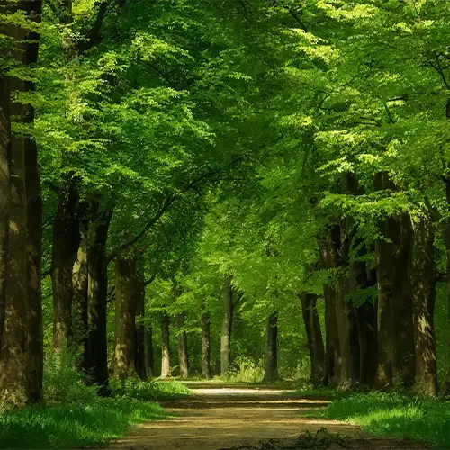

🌳 BOSQUE SAGRADO
Decides rodear la cripta y adentrarte en el bosque. La vegetación es tan densa que apenas deja pasar la luz del sol. Escuchas el canto de aves exóticas y, de repente, un rugido profundo retumba entre los árboles.
Caminas con cuidado y encuentras un claro donde yace un dragón herido, de escamas color obsidiana y ojos dorados. A su lado, una pequeña criatura luminosa revolotea: es un hada de la selva, que te mira con curiosidad.
El hada susurra: "El guardián de la cripta está herido. Solo uno de ustedes puede sobrevivir esta noche."
